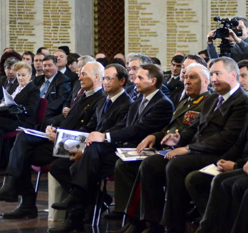

Будет ли создано в Тверской области региональное отделение Российского общественно-государственного военно-исторического общества?
14 марта 2013 года в Центральном музее Великой Отечественной войны на Поклонной горе состоялся Учредительный съезд Всероссийской общественно-государственной организации «Российское военно-историческое общество». В работе съезда от Тверской области принимал участие руководитель Тверского регионального научного военно-исторического центра, член Общественной палаты Тверской области, доктор военных наук, профессор Хетчиков Михаил Дмитриевич.
 В процессе работы участники съезда обсудили семь вопросов, включенных в повестку дня.
1.О создании Общероссийской общественно-государственной организации «Российское военно-историческое общество».
2.Об Утверждении Устава Общероссийской общественно-государственной организации «Российское военно-историческое общество».
3.Об избрании Председателя Российского военно-исторического общества.
4. О формировании руководящего, контрольно-ревизионного и иных органов Общероссийской общественно-государственной организации «Военно-историческое общество».
5.О создании структурных подразделений Общероссийской общественно-государственной организации «Российское военно-историческое общество».
6. О государственной регистрации Общероссийской общественно-государственной организации «Российское военно-историческое общество».
7. О создании Медиасовета и Научного совета Общероссийской общественно-государственной организации «Российское военно-историческое общество».
По первому вопросу съезд принял решение – учредить Общероссийскую общественно-государственную организацию «Российское военно-историческое общество». От имени государства учредителями новой организации выступили Министерство культуры и Министерство обороны Российской Федерации.
Съезд утвердил Устав общества, дополнив предложенный проект Устава новыми положениями. При обсуждении Устава делегаты съезда обращали внимание в своих выступлениях на то, что новая организация создаётся с целью «консолидации сил государства и общества в изучении военно-исторического прошлого России, противодействия попыткам искажения российской военной истории». Многократно было подчёркнуто, что в отличие от ранее существовавших общественных организаций, строивших свою работу на энтузиазме, без целенаправленной поддержки государства и региональных структур власти, новая организация – общественно-государственная, состоящая из двух структурно-функциональных элементов. Двуединая структура, определённая Указом Президента РФ и Уставом общественно-государственной организации, обусловила распределение функций и перечень задач, решаемых каждым функциональным элементом.
Единогласно съезд избрал Председателем Военно-исторического общества Мединского Владимира Ростиславовича.
В результате обсуждения четвёртого вопроса, съезд утвердил Центральный совет Общероссийской общественно-государственной организации «Российское военно-историческое общество» в количестве 58 человек, избрал Контрольно-ревизионную комиссию. В состав Центрального совета от военных историков, по предложению делегатов съезда, был введен доктор военных и исторических наук, профессор генерал армии Гареев Махмут Ахметович – Президент Академии военных наук.
По вопросу о государственной регистрации Общероссийской общественно-государственной организации «Российское военно-историческое общество» съезд руководствовался Указом Президента РФ от 29 декабря 2012 года № 1710. Было принято решение – завершить государственную регистрацию Общероссийской общественно-государственной организации «Российское военно-историческое общество» до 31 марта 2013 года, включая и регистрацию структурных подразделений в субъектах Российской Федерации.
Решением съезда был создан Попечительский совет, председателем которого избран представитель Министерства обороны РФ Рогозин Д.А.
Решением съезда были утверждены региональные отделения общества в 63 субъектах Российской Федерации, в то числе и в Тверской области.
Учитывая, что сроки государственной регистрации, определённые в Указе Президента РФ, жесткие, организаторы съезда провели предварительную работу совместно с регионами по подготовке учредительных документов. В процессе выполнения этой работы были составлены списки членов региональных отделений, оформлены протоколы собраний, подготовлены регистрационные карточки учредителей. Для завершения проделанной работы необходимо было согласовать с органами законодательной и исполнительной власти региона состав совета, кандидатуру Председателя регионального отделения, а также порядок реализации в регионе пункта 4 Указа Президента № 1710 от 29.12.2012 года.
15 марта делегат съезда от Тверской области Хетчиков М.Д. доложил губернатору, председателю Законодательного собрания, членам Тверской областной общественной палаты на заседании годового собрания ОПТО о результатах работы съезда и предложение об участии законодательной и исполнительной ветвей региональной власти в реализации Указа Президента РФ и решений съезда.
Губернатор Тверской области Андрей Шевелёв поручил начальнику Управления по общественным связям Гагарину А.В. проработать возможные варианты создания Тверского регионального отделения Общероссийской общественно-государственной организации «Российское военно-историческое общество».
26 марта состоялась рабочая встреча руководителя Тверского регионального научного военно-исторического центра Хетчикова М.Д. с Гагариным А.В..На этой встрече присутствовали Черных Т.В. и Морева М.А.
В начале встречи Хетчиков М.Д. проинформировал присутствующих о результатах работы съезда, изложил свое видение процесса создания регионального отделения Общероссийской общественно-государственной организации «Российское военно-историческое общество». Было заявлено о том, что общественная составляющая общественно-государственной структуры в области реально существует в лице Тверского регионального научного военно-исторического центра. Одновременно была выражена надежда на то, что создание государственной составляющей на региональном уровне не займёт много времени. Но, как оказалось в процессе встречи, этому ожиданию не суждено было сбыться.
Во время встречи региональный чиновник Гагарин А.В. заявил, что Указ Президента РФ – это не закон, а потому, денег на его реализацию в области нет. Кроме того, он считает, что создавать, предусмотренные Уставом Общественно-государственной организации, региональные структуры не целесообразно. На моё предложение, о введении в состав Совета регионального отделения представителя Правительства Тверской области, реакции не последовало. Не дал представитель Правительства и вразумительного ответа на вопрос о том, как в Тверской области будет реализовываться пункт 4 Указа Президента РФ «о размещении региональных структурных подразделений Российского военно-исторического общества, о порядке предоставления субсидий». Региональный чиновник посоветовал Генеральному директору Тверского государственного объединённого музея Черных Т.В. выделить помещение для работы Тверского регионального научного военно-исторического центра, а мне порекомендовал: «Продолжайте работать так, как работали раньше». Встреча завершилась ничем.
Невольно возникает вопрос. Если чиновнику регионального уровня Гагарину А.В. Указ Президента РФ не указ, а объявление на заборе, то не следует ли общественникам обратиться в Администрацию Президента РФ за разъяснениями?
Сложилась ситуация, характеризуемая тем, что Указ Президента РФ определяет новый курс развития гражданского общества, курс на борьбу с фальсификацией военной истории России, а региональный чиновник не видит этого. В условиях информационной войны, когда 654 некоммерческие общественные организации, финансируемые из-за рубежа, активно ведут работу по фальсификации военной истории нашего государства, президент страны рекомендует консолидировать усилия общественных организаций и государственных структур на противодействие фальсификаторам, активизировать научно-исследовательскую работу. А что делает правительство Тверской области? Оно делает политическую ошибку, самоустраняясь от реализации Указа Президента РФ, от реализации положений Устава Общероссийской общественно-государственной организации «Российское военно-историческое общество». Более того, оно пропагандирует псевдонаучные термины, выдавая их за серьёзные научные результаты. Так, например, в начале марта 2013 года в Центральном музее Великой Отечественной войны на Поклонной горе широко и торжественно, за деньги налогоплательщиков Тверской области, отмечалось 70-летие псевдонаучного термина «Ржевская битва». Не реального военно-исторического события, а псевдонаучного термина, вводимого в оборот региональными журналистами.
В результате встречи стало ясно, что региональная исполнительная власть пытается самоустраниться от создания Тверского отделения Общероссийской общественно-государственной организации «Российское военно-историческое общество», демонстрирует нежелание реально развивать гражданское общество, нежелание реально бороться с доморощенными фальсификаторами военной истории.
В сложившихся условиях возникла объективная необходимость в проведении Учредительного собрания без участия региональной исполнительной власти. Общественники сами должны решить – будет ли в Тверской области региональное отделение Общероссийской общественно-государственной организации «Российское военно-историческое общество», или продолжить работу в рамках существующего Тверского регионального научного военно-исторического центра.
М.Д. Хетчиков, руководитель Тверского регионального научного
военно-исторического центра, доктор военных наук, профессор. |